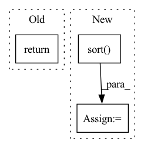

Pattern ID :16406
Before Change
partial_fields={}, sort=sort, start=offset, size=limit)
except elasticsearch.exceptions.ConnectionError:
logging.debug(" ***> ~FRNo search server available.")
return []
logging.info(" ---> ~FG~SNSearch ~FCstories~FG for: ~SB%s~SN (across %s feed%s)" %
(query, len(feed_ids), "s" if len(feed_ids) != 1 else ""))After Change
string_q = elasticsearch_dsl.Q("query_string", query=query)
feed_q = elasticsearch_dsl.Q("terms", feed_id=feed_ids[:2000])
search_q = string_q & feed_q
s = s.sort( sort) [offset:offset+limit]
s.query(search_q)
results = s.execute()
// string_q = pyes.query.QueryStringQuery(query, default_operator="AND")
// feed_q = pyes.query.TermsQuery("feed_id", feed_ids[:2000])In pattern: SUPERPATTERN
Frequency: 4
Non-data size: 3
Instances Fragment ID: 55204334
Project Name: samuelclay/NewsBlur
Commit Name: fb322a6573c5c5fc33d6cab163a24faa69117538
Time: 2021-03-19
Author: samuel@ofbrooklyn.com
File Name: apps/search/models.py
M Class Name: SearchStory
N Class Name: SearchStory
M Method Name: query(7)
N Method Name: query(7)
M Parent Class:
N Parent Class:
M File Name: apps/search/models.py
N File Name: apps/search/models.py
M Start Line: 291
M End Line: 307
N Start Line: 293
N End Line: 318
Before Change
tensor * ctx.scale, torch.log(w), regularization
)
ctx.factor = torch.exp(ctx.projection.compute())
return ctx.factor
@staticmethod
def backward(ctx, grad_output):After Change
ctx.regularization = regularization
w = _arange_like(tensor, reverse=True) + 1
theta = tensor * ctx.scale
s, permutation = torch.sort( theta, descending=True)
inv_permutation = _inv_permutation(permutation)
if ctx.regularization == "l2":
dual_sol = isotonic_l2_cpu(s - w)
ret = (s - dual_sol)[inv_permutation] Fragment ID: 55204339
Project Name: teddykoker/torchsort
Commit Name: c8ac1de21639cf057aeff4f1aea1639b839276ed
Time: 2021-03-21
Author: teddy.koker@gmail.com
File Name: torchsort/ops.py
M Class Name: SoftRank
N Class Name: SoftRank
M Method Name: forward(4)
N Method Name: forward(4)
M Parent Class: torch.autograd.Function
N Parent Class: torch.autograd.Function
M File Name: torchsort/ops.py
N File Name: torchsort/ops.py
M Start Line: 51
M End Line: 62
N Start Line: 71
N End Line: 87
Before Change
del S, Y, X, M, G
gc.collect()
return ts_data, s_data, meta_data, t_cols, s_cols
// Cell
@patchAfter Change
assert np.array_equal(M.ds.values, Y.ds.values), f"Mismatch in M, Y ds"
// Dates
ds = np.sort( Y["ds"].unique())
// Create bigger grouped by dataframe G to parse
M = M[["available_mask", "sample_mask"]]
X.drop(labels=["unique_id", "ds"], axis=1, inplace=True) Fragment ID: 55204337
Project Name: nixtla/neuralforecast
Commit Name: d043b81de884c358278d100600a26454b7e94d4c
Time: 2022-06-09
Author: kin.gtz.olivares@gmail.com
File Name: neuralforecast/data/tsdataset.py
M Class Name: AnonimousClass
N Class Name: AnonimousClass
M Method Name: _df_to_lists(5)
N Method Name: _df_to_lists(5)
M Parent Class:
N Parent Class:
M File Name: neuralforecast/data/tsdataset.py
N File Name: neuralforecast/data/tsdataset.py
M Start Line: 213
M End Line: 234
N Start Line: 198
N End Line: 239
Before Change
// Load everything
self.load_calib_poses()
return
def __len__(self):
Return the length of data hereAfter Change
elif self.sensor == "camera":
sensor_path = join(self.path, "sequences", seq, "image_2")
frames = np.sort( [f[:-4] for f in listdir(sensor_path) if f.endswith(".png")])
self.frames.append(frames)
//////////////////////////////////// Fragment ID: 55204343
Project Name: utiasasrl/hero_radar_odometry
Commit Name: 73a52f7cc6a3fc5963e0b6bb1304e257f097384d
Time: 2020-08-13
Author: mona.gridseth@robotics.utias.utoronto.ca
File Name: datasets/kitti.py
M Class Name: KittiDataset
N Class Name: KittiDataset
M Method Name: __init__(3)
N Method Name: __init__(3)
M Parent Class: Dataset
N Parent Class: Dataset
M File Name: datasets/kitti.py
N File Name: datasets/kitti.py
M Start Line: 75
M End Line: 105
N Start Line: 57
N End Line: 115